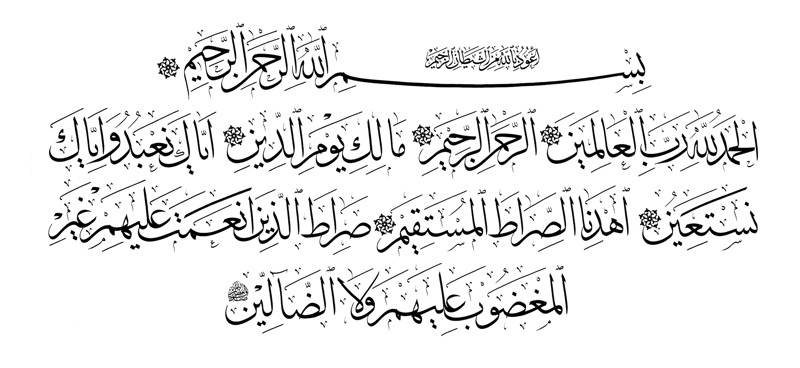
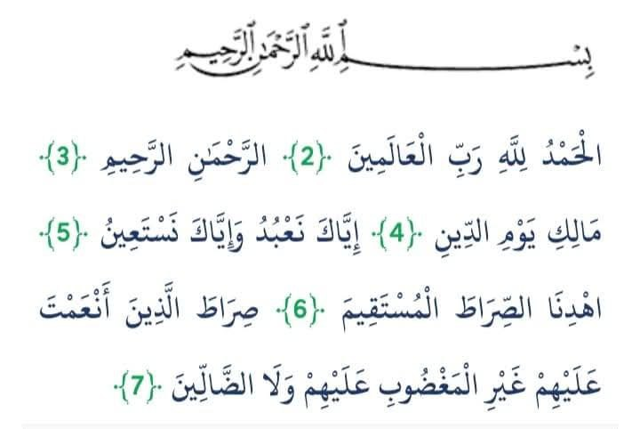
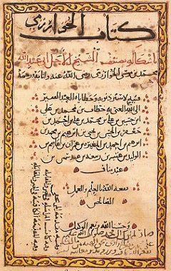
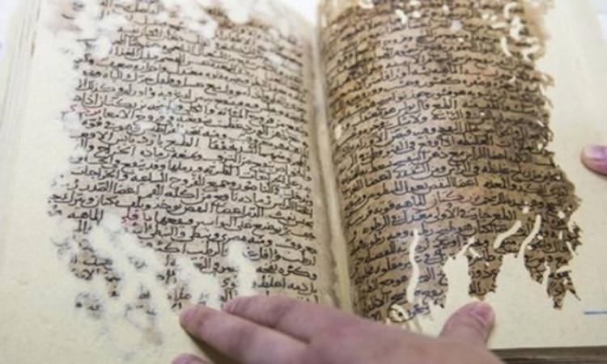
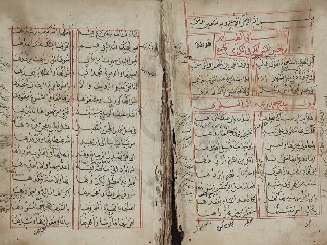
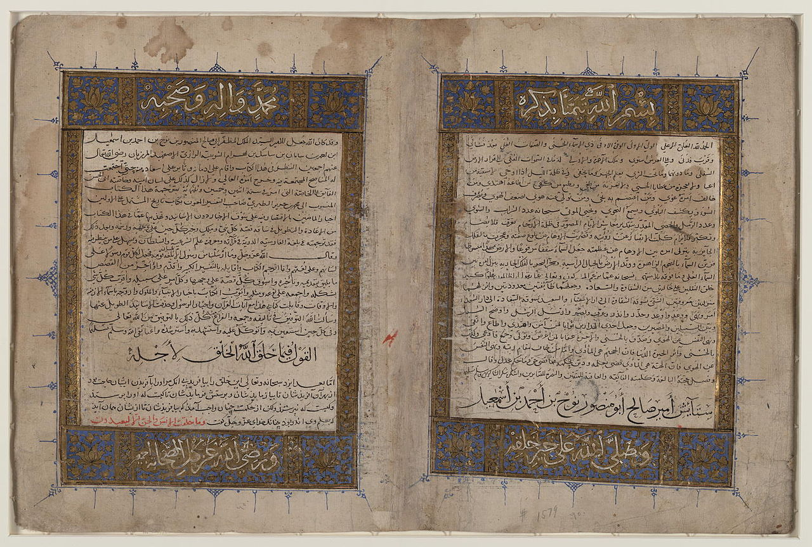
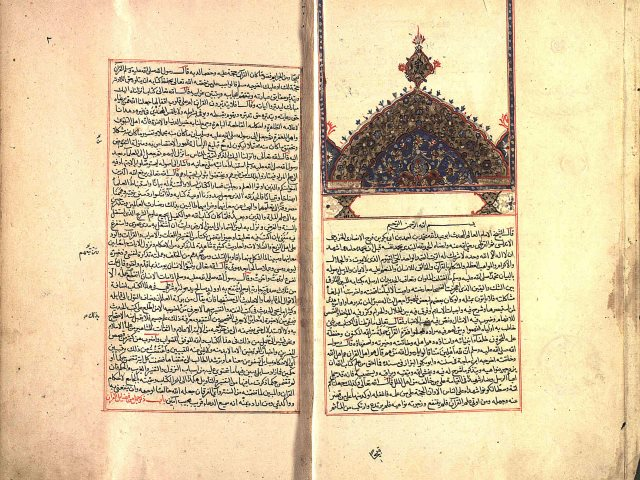
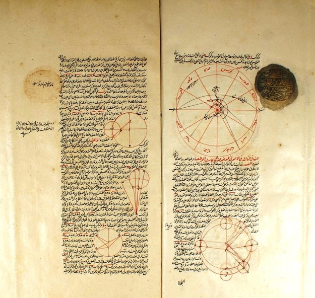

النص المستخرج
بسم الله الرحمن الرحيم
الحمد لله رب العالمين الرحمن الرحيم مالك يوم الدين
إياك نعبد وإياك نستعين اهدنا الصراط المستقيم
صراط الذين انعمت عليهم غير المغضوبي عليهم ولا الضالين
تجربة تفاعلية تشرح كيف نحول مخطوطاتك التاريخية إلى نصوص رقمية قابلة للبحث
نقوم بتصوير المخطوطة بطريقة واضحة تضمن الحفاظ على محتواها وسهولة معالجتها لاحقًا
تحسين جودة الصور باستخدام خوارزميات الذكاء الاصطناعي المتقدمة
استخراج النصوص باستخدام نماذج ذكاء اصطناعي مدربة على الخطوط العربية
مراجعة النصوص وتصحيح الأخطاء مع الحفاظ على النص الأصلي
إنشاء قاعدة بيانات متكاملة مع إمكانيات بحث متقدمة
رفع مخطوطتك أصبح أسهل من أي وقت مضى مع تقنياتنا الذكية
اسحب وأفلت الصور هنا أو انقر للاختيار
يدعم: JPG, PNG, TIFF, PDFنضمن حماية كاملة لصور مخطوطتك خلال عملية الرفع باستخدام تشفير متقدم
مخطوطتك في أيدٍ أمينة مع أحدث تقنيات التعلم العميق


بسم الله الرحمن الرحيم
الحمد لله رب العالمين الرحمن الرحيم مالك يوم الدين
إياك نعبد وإياك نستعين اهدنا الصراط المستقيم
صراط الذين انعمت عليهم غير المغضوبي عليهم ولا الضالين
احصل على مخطوطتك محولة إلى نص رقمي مع إمكانية التعديل والتحميل
كل مخطوطة تحكي قصة، وكل قصة تستحق الخلود. احفظ تراثك اليوم للأجيال القادمة
هل تمتلك مخطوطة نادرة تحتاج للحفظ الرقمي؟ دعنا نحافظ على تراثك للأجيال القادمة!
استكشف مجموعة من أبرز المخطوطات التي تم حفظها رقمياً بنجاح






اكتشف التنوع الغني للمخطوطات العربية في التراث الجزائري

مخطوطات تناولت القواعد الفقهية والتشريعات الإسلامية بجهود علماء الجزائر.

مخطوطات تبحث في اللغة العربية وأصولها، ودور الجزائر في الحفاظ على تراثها.

توثق التاريخ الجزائري القديم والعلاقات الثقافية والسياسية في شمال إفريقيا.

مخطوطات نادرة تشرح طرق العلاج التقليدي والأعشاب المستخدمة في الجزائر القديمة.

تضم دراسات دقيقة حول علم الفلك والحساب عند العلماء الجزائريين القدامى.